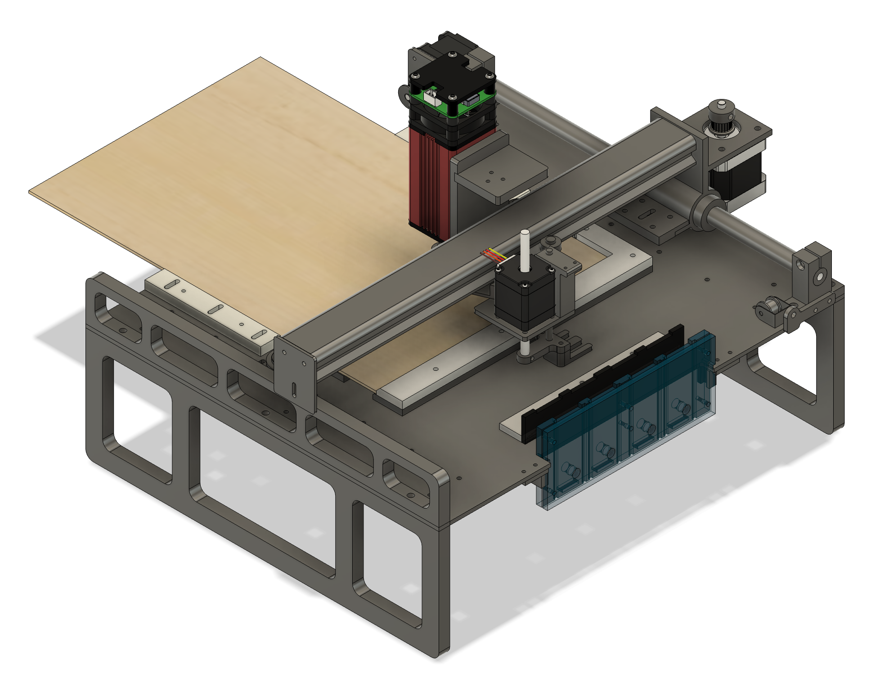
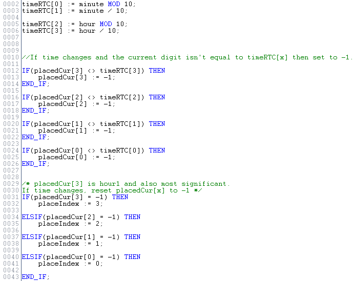

Arduino PLC Clock Project
CodeThe machine is made up of 3 axes. The X and Y axis were salvaged from a K40 laser cutter, and the Z axis is made up of a NEMA 11 non-captive stepper motor, and a few other pieces. A fourth motor driver and 2 stepper motors are used to index the plywood forward after each row is cut.
The board is fed with 24V, the digital outputs and digital IO portions of the board require 24V but seem to work fine using lower voltages.
The engraving and cutting is done with a 20W laser module. This laser engraves each digit needed for the current time and cuts out a 20mm x 30mm piece. The input to the laser is a 0-12V PWM signal. The PWM input is connected to one of the 0-10V analog outputs on the controller (laserPWM).
Once cut, the hand on the Z-axis picks the piece and places it into the clock face, 4 solenoids are used to drop the existing digit out before the new one is placed. A 4 channel MOSFET board is used to control these solenoids. An 8Ω 50W resistor is used to limit the current.
The machine is controlled by an Arduino Portenta Machine Control. Each stepper motor drive requires a pulse and direction input. On the PLC side there is a function block that handles the moves. The function block takes in the requested XYZ positions and outputs them to XPos, YPos, ZPos. These 3 variables are compared with XPosAct, YPosAct, ZPosAct (actual positions) to determine if the requested move is complete. These 6 variables are shared with the arduino side of the platform.
The PLC side of the controller has a period of 10ms, too slow for any adequate stepping (3200 step/Rev * .01sec/step = 32sec/Rev). The Arduino sketch handles the direction/stepping of the motor.

The controller has an RTC that is accessible through the arduino sketch. Two variables: 'hour', and 'minute' are exported from the sketch and used to get the current time. In the structured text program, the minutes and hours are further divided into 4 digits that will make up the time.
The placedCur[] array tracks the pieces in the clock face, and determines which digit is needed next. The cascading If statements are used to make sure that the most significant parts of the time are cut first.

Each digit has its own function block, the function block takes in the relative zero coordinates of the current piece being cut, and sequences through a series of moves to engrave the digit. Each digit has a series of coordinates which are translated into linear moves to engrave a number.


The program is split into 5 different sequences which continually loop through once the start button is pressed. The bit relative to the sequence is set/reset and the sequence is set back to its initial state.